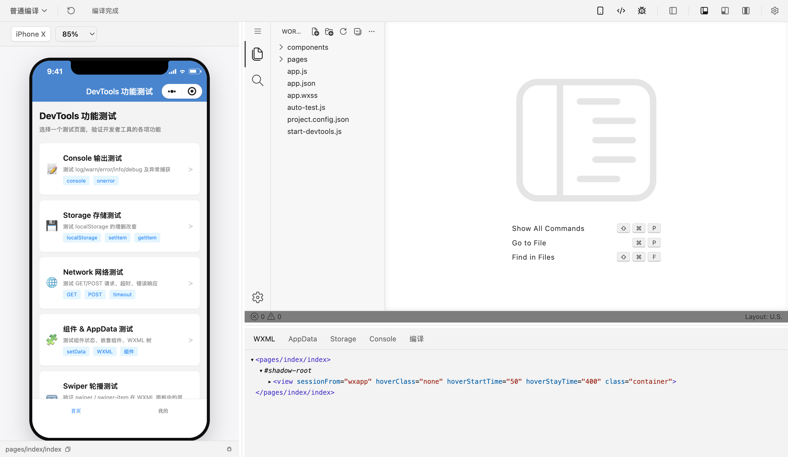

编辑器与模拟器
内嵌编辑器改代码，旁边的模拟器看结果。保存样式时尽量热更新；保存脚本或模板后，模拟器会重新启动。
配合 Dimina 使用
桌面工具里有模拟器、编辑器和调试面板。编译、H5 预览和 Electron 运行时也可以单独安装。
支持 macOS · Windows · Linux

桌面工具
WXML、AppData、Storage、Console 和编译面板跟模拟器放在一起。
内嵌编辑器改代码，旁边的模拟器看结果。保存样式时尽量热更新；保存脚本或模板后，模拟器会重新启动。
可以接上 Chrome DevTools，也有 WXML、AppData、Storage、Console 和编译面板。AppData 改完可以写回。
切换手机和平板，检查安全区、状态栏和挖孔对页面布局的影响。
compiler、devkit 和 electron-runtime 不依赖桌面工具，可以装进自己的程序。
查看所有开发包正式版 · Dimina DevTools 0.4.0
下面是当前正式版。其他版本和更新说明在 GitHub Releases。
Node.js
安装 @dimina-studio/devkit，用返回的端口打开预览。
import { openProject } from '@dimina-studio/devkit'
const session = await openProject({
projectPath: '/path/to/miniapp',
port: 0,
})
console.log(session.port)